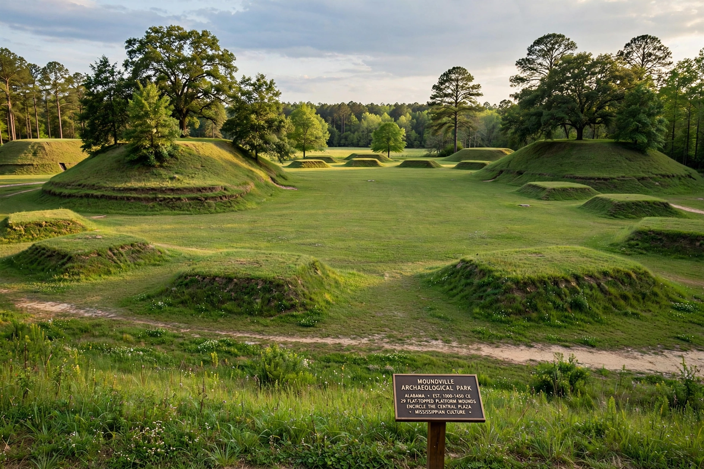

The Moundville Archaeological Site, on the Black Warrior River in west-central Alabama, was the political and ceremonial centre of a Mississippian-culture chiefdom between about 1000 and 1450 AD. It is one of the largest and best-preserved sites of its kind in the United States, containing 29 platform mounds arranged around a great central plaza, protected on the landward side by a wooden palisade.
Moundville began as a local centre around 1000 AD and grew rapidly in the 12th–13th centuries into a fortified town of perhaps 1,000–3,000 people within the palisade, ruling a valley population of around 10,000. The mounds, built in pairs of differing size in a pattern repeated around the plaza, are interpreted as the platforms for the houses and mortuary temples of ranked kin groups, with the largest mound (Mound A) at the plaza's centre-north edge. Elite burials contained finely made goods — copper axes and earspools, carved stone palettes, marine-shell gorgets and pottery engraved with the imagery of the Southeastern Ceremonial Complex (SECC), including the hand-and-eye motif. After about 1350 the town lost most of its resident population but continued as a necropolis and ceremonial centre used by people of the surrounding valley.
The site was excavated extensively by Clarence Bloomfield Moore in 1905–1906 and by the Alabama Museum of Natural History and Civilian Conservation Corps crews in the 1930s. It is now an archaeological park of the University of Alabama, with a museum (the Jones Archaeological Museum) displaying material from the site, and is a National Historic Landmark.
See also: Monks Mound · Chan Chan